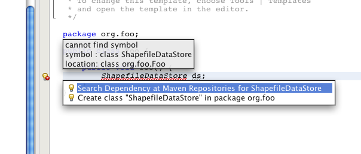
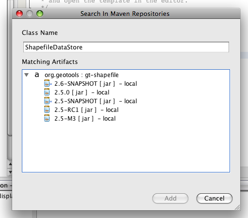
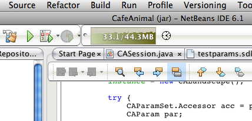

Welcome to NetBeans Developers¶
NetBeans is an Integrated Development Environment (IDE), a software package which can be used to develop programs. Several developers use NetBeans to develop GeoTools itself or GeoTools based software. NetBeans is available from Oracle as a free software download. There are also derivatives such as Sun ONE Studio (previously Forte for J).
The GeoTools project offers a great “Netbeans Quickstart” describing how to set things up. NetBeans provides strong maven intergration making it an ideal environment to work with GeoTools smoothly and easily.
Finding Geotools artifact containing a Class¶
When working on a Geotools / Maven project within Netbeansyou can take advantage of the repository search facility to find the Geotools artifact that you need to add to your project for a given class.
For instance, say you want to use the ShapefileDataStore class but don’t know the name of the artifact that contains it. In your code, enter the class name followed by a variable name. Netbeans will display the following.
Click on Search Dependency at Maven Repositories and you will get the search dialog.
In this example it shows the artifact is gt-shapefile and that there are a number of versions available in the local repository.
Select the required version, click the Add button and it will be added as a dependency to your project.
Unfortunately, because the Geotools repository doesn’t use the indexing system required by Netbeans/Maven, the search dialog will show matching artifacts that are available to download.
Artifact added to POM but imports still not found¶
When you want to use Geotools class X.from artifact Y (say ShapeFileDataStore from gt-shape).
Add the artifact as a dependency in your pom.xml file, either:
- Directly; or
- Right-clicking on Libraries and selecting Add Library
If the import statements for classes in that artifact still do not work
This usually means that the artifact hasn’t yet been downloaded into your local repository. You can confirm this by looking at the node for that artifact in the Libraries section (Project window).
Artifacts in the local repository can be expanded to view their contents but those not yet downloaded don’t have the expand arrow next to them.
To fix:
The easiest thing to do is build the project. This will result in Maven downloading the artifact for you.
Occasionally Netbeans fails to register that the artifact is now present.
Sometimes this can be fixed by going to the Maven Repositories window, right-clicking on the entry for your local repository, and selecting update index.
If this doesn’t work, close the project and then open it again.
Specifying and monitoring memory usage¶
Netbeans is itself a Java application. It automagically sets the amount of memory (heap) that will be available to the Java runtime when it is starting, but you may find that this default size is not large enough. If you get out of memory errors, or if Netbeans seems very sluggish, you can explicitly set the maximum heap size in the file etc/netbeans.conf by adding -J-XmxNb (where N is an integer number of Mb) to the ‘netbeans_default_options’ variable near the top of the file. For example, here we are requesting a maximum heap size of 640Mb:
netbeans_default_options="-J-client -J-Xss2m -J-Xms32m -J-Xmx640m -J-XX:PermSize=32m -J-XX:MaxPermSize=200m -J-Xverify:none "
You can monitor memory use within the IDE:
Select View menu -> Toolbars menu -> Memory
The current and peak memory usage are shown in the toolbar.

- You can force the garbage collector to try to recover memory by clicking on the memory widget.